Leica-x1 series
Unsurpassed performance in a compact package.
- 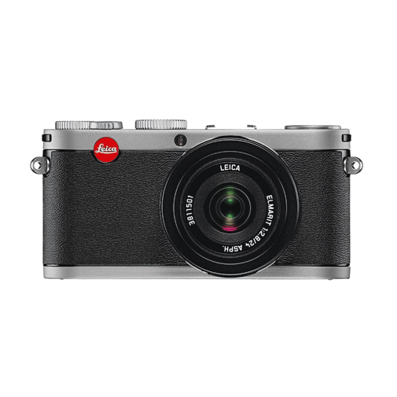
Leica-x1
Leica & classic cameras
- 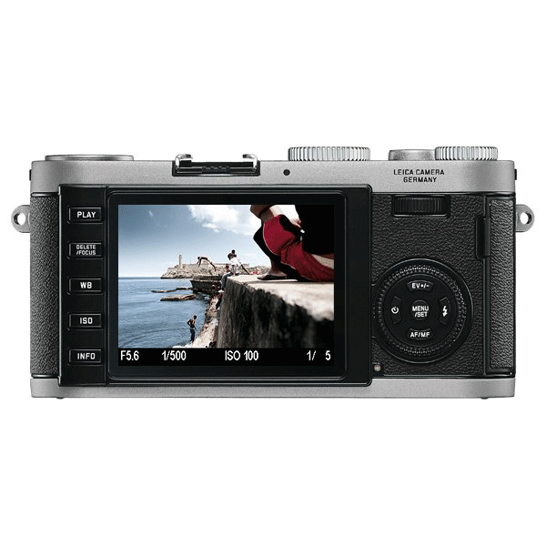
simple & total control
easy control / at your service
- 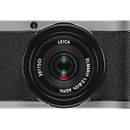
autofocus
Excellence
- 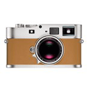
classic design
Style change

optical finder
Elmarit 24mm f/2.8 ASPH.
- 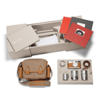
optional
Accessories
- 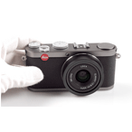
Leica-x1
technical data
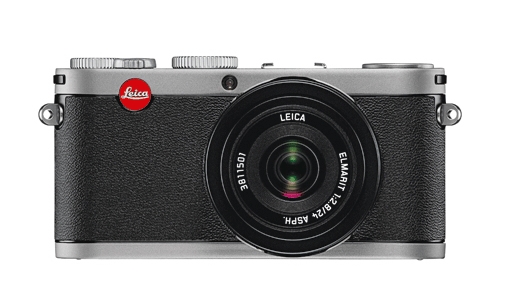
Leica x1
unsurpassed performance in a compact package.
라이카의 모든 카메라는 세계 최고의 품질의 카메라를 개발하기 위한 제작진의 열정과 욕망에 의해 만들어진다는 공통점을 가지고 있다.
라이카X1은 100년이 넘는 독일 기술자들이 기술과 경험에 의하여 탄생하였으며 라이카의 자존심과 전통에 어긋나지 않는 최고 품질의 사진을 만들어 낸다.
라이카X1에는 고급 기종의 D-SLR에 장착된 이미지 센서와 비슷한 크기의 CMOS 이미지 센서가 탑제 되어 있다. 사용하기 편리한 아담한 사이즈, 편리하고 직관적인 인터페이스 그리고 세련된 기능들을 두루 갖춘 라이카 X1은 최고의 선택이 될 것이다.
◀ 이전 페이지로 이동
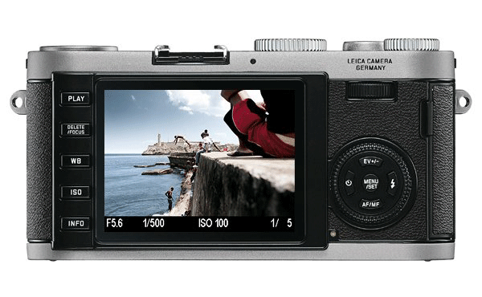
As spontaneous as life itself.
An all-around genius
라이카 X1은 다양한 자동 기능 및 수동 개별 설정과 관련하여 다재다능한 포토그라피를 제공한다. 사진작가는 쉬운 방법을 선택할 수 있으며, 카메라로 하여금 자동 모드로 노출 또는 셔터 설정을 이끌거나 카메라 상단에 있는 휠을 사용하여 수동 제어로 변환하게끔 한다.
따라서 X1은 사진작가들이 개인의 창조적인 예술 작업을 위해 완전한 제어를 유지할 수 있게 해주며, 동시에 빠른 반응에 대한 능력을 보장하기 위해 자동 모드를 제공할 수 있게 해준다.
◀ 이전 페이지로 이동
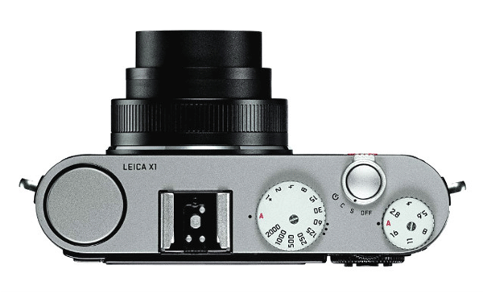
Leica x1 Autofocus
it's so Excellence
X1의 자동 초점 조절 기능으로 인해 사진작가들은 즉각적으로 반응할 수 있게 되었다.
동시에 자동 초점 조절 모드는 상황에 적합하게끔 변경될 수 있다. 사진작가들은 1~11 AF 세그먼트를 선택하거나 각각에 대해 추가적인 고속 모드를 선택한다. 인물 사진을 촬영할 때 안면 인식 모드로 인해 사진 구성 및 프레이밍에 모든 집중을 쏟을 수 있다.
각 단계별 high-speed 모드도 가능하다. 인물 사진을 찍을 때에는 얼굴 인식 모드를 사용할 수 있다.
◀ 이전 페이지로 이동
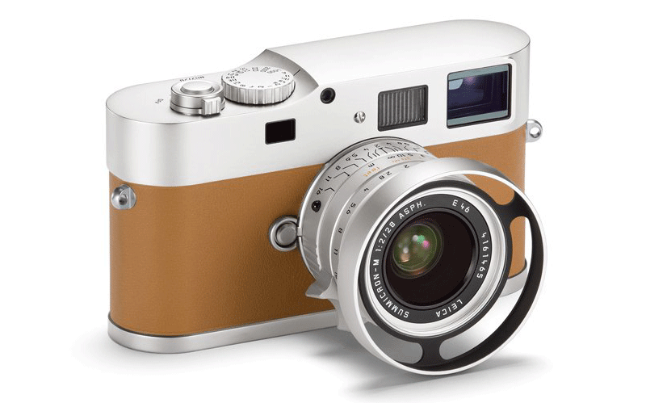
Spontaneous as life itself.
universal formats
라이카의 디자인은 단순한 외관 스타일 이상이다. 특히 이미지 품질과 관련하여 X1는 더 큰 사이즈의 사촌뻘 되는 모델과도 비교를 거부한다.
X1은 사진작가들에게 사전에 연습되지 않은 진정한 순간과 느낌을 정확하게 포착해낼 수 있는 유연성을 제공해준다. 이것이 바로 X1을 완벽한 일상의 동반자로 만들어 주는 것이다.
Leica X1은 100년 이상의 독일의 공학 경험의 직접적인 수혜자이며, 자랑스런 라이카 전통에 있어 동급 모델 중 최상의 사진 품질을 제공한다. 이 우아한 카메라는 고품질의 SLR의 이미지 센서만큼 큰 전문 CMOS 이미지 센서를 가지고 있다. 뛰어난 라이카 렌즈와 결합함으로써 조화되지 않은 휘도의 이미지를 포착한다.
당신이 어떻게 바라보던 라이카 X1은 승리자이다. 편리하면서 소형하며, 조작은 직관적이며, 모든 범위의 정교한 자동 기능을 제공해준다.
◀ 이전 페이지로 이동
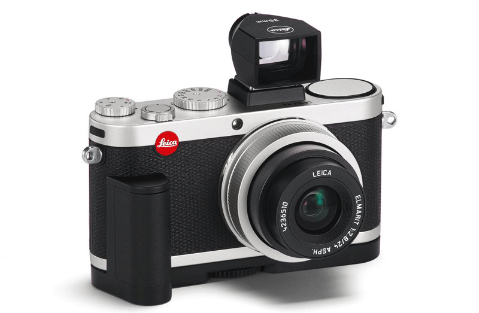
Optical finder
Elmarit 24mm f/2.8 ASPH.
상판의 핫슈에 x1 전용 파인더를 장착하게 되면 라이카x1은 전혀 다른 캐릭터의 카메라로 변신한다.
당신의 눈을 이 뷰파인더에 갖다 대는 그 순간, 모든 상황들이 순식간에 파악될 것이다. 필요에 따라서는 이 뷰파인더를 사용하는 동안에는 LCD모니터를 꺼둘 수도 있다.
◀ 이전 페이지로 이동
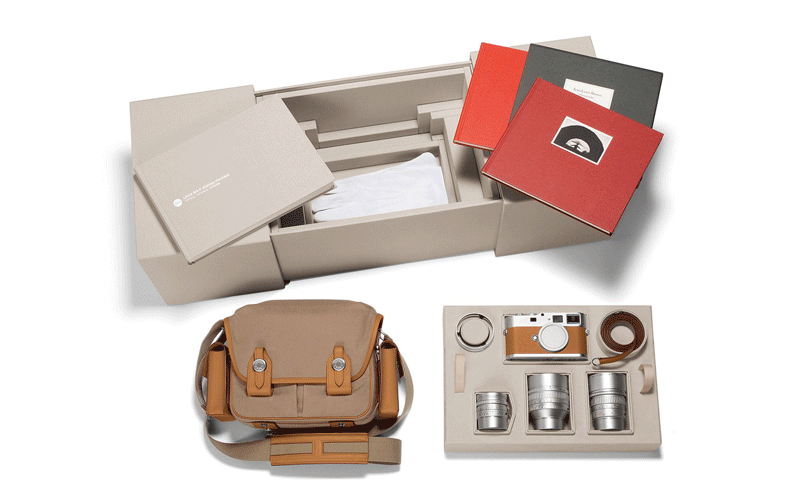
optional accessories
한손으로 작동시킬 수 있는가?
손잡이가 있다면 전혀 문제될 것이 없다. 손잡이는 상당히 더 좋아진 그립을 갖게된다는 것을 보장해준다.
x1은 다양한 종류의 카메라 케이스 또한 이용이 가능하다. 순간적인 사용을 위해서는 x1 ever-radey 케이스를 권장한다. 이 케이스는 카메라를 보호하는 것 뿐만 아니라 필요한 순간에 즉시 카메라를 사용할 수 있으며 핸드 그립을 장착한 카메라를 넣을 수 있을 정도의 넉넉한 공간을 갖추고 있다.
또한 스트랩에는 액세서리 뷰파인더를 넣을 수 있는 작은 케이스까지 마련되어 있다. 최고급 품질의 x1전용 가죽 케이스는 패션 아이콘으로서 이 멋진 외관을 갖춤과 동시에 완벽하게 카메라를 보호 할 수 있는 매력이 있으며 x1 시스템 케이스는 바디와 액세서리 모두를 넣을 수 있는 넉넉한 공간을 가지고 있다.
◀ 이전 페이지로 이동
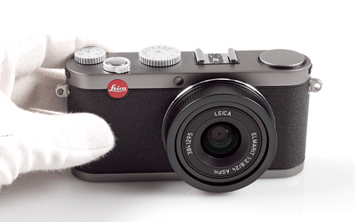
◀ 이전 페이지로 이동
Leica x1
technical data
| 구분 | 내용 |
|---|---|
| 렌즈 | Leica Elmarit 1:2.8 |
| 광학줌 | 없음 |
| 디지털줌 | 없음 |
| 초점거리 | f=24mm(35mm) |
| 조리개 | F2.8/F16.0(1/3EV) |
| 촬영범위 | 표준:60cm~무한대 매크로:60cm~무한대 수동:30cm~무한대 |
| 초점 | 고속1-구역/ 스팟 |
| AF 보조램프 | 있음 |
| 카메라 유효화소 | 12.2 Megapixel |
| ISO 설정 | auto / 100~3200 |
| 화이트밸런스 | auto/할로겐/태양광 |
| 셔터 스피트 | 30~1/2000초 |
| 셀프 타이머 | 2초 또는 12초 |